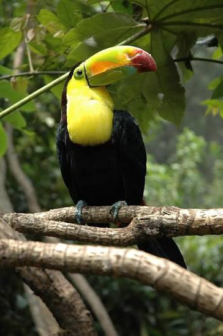

Guacamaya: Una de las aves más espectaculares y vistosas de las selvas tropicales de América, famosa por vestir un plumaje de colores extremadamente intensos y radiantes que van desde el rojo fuego hasta el azul cobalto. Más allá de su innegable belleza estética, las guacamayas poseen una inteligencia superior, son capaces de imitar sonidos, viven en parejas monógamas que permanecen juntas durante toda su vida y desempeñan un rol vital en el ecosistema al dispersar semillas mientras realizan sus ruidosos y majestuosos vuelos en bandada.